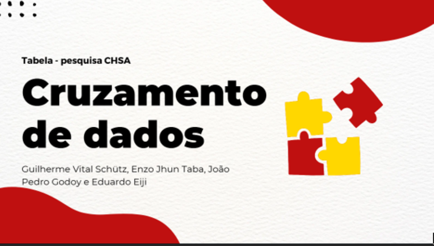
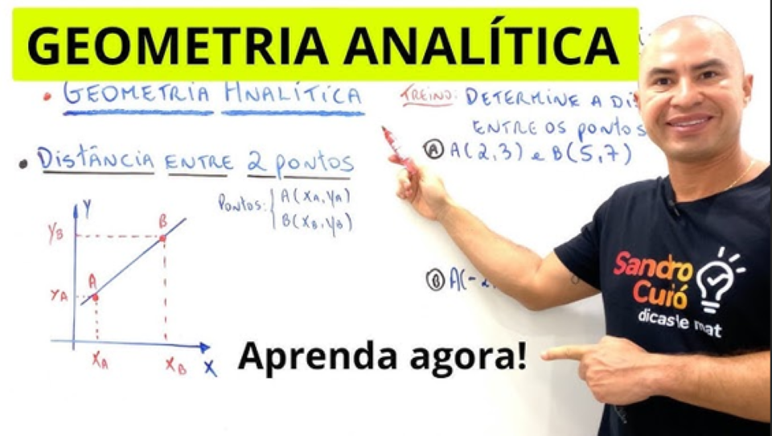
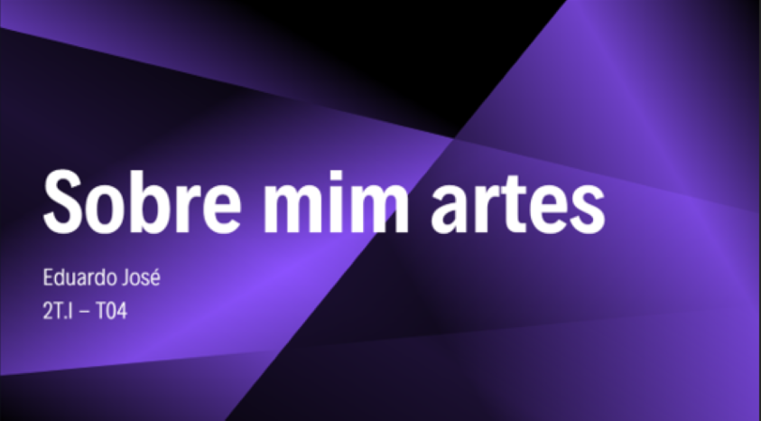

CIENCIAS
HUMANAS
Nesse tivemos que entrevistar as pessoas no campus do Senac e coletar informações de onde elas moravam, para cruzar com dados de sua classe, etnia e o setor de trabalho.

Nesse tivemos que entrevistar as pessoas no campus do Senac e coletar informações de onde elas moravam, para cruzar com dados de sua classe, etnia e o setor de trabalho.


Aqui tivemos que definir algumas funções orgânica e inorgânicas trabalhando com algumas curiosidades e mais!
A geometria analítica que usamos no 1° ano teve poucos trabalhos de apresentações, utilizamos muito o Khan Academy e atividades no caderno!


Esse foi o primeiro trabalho de artes na matéria de Linguagens! Como foi no inicio do ano a professora passou uma dinâmica para nos apresentarmos, e eu fiz algumas curiosidades e coisas que gosto!